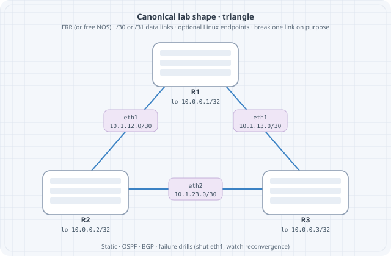

Containerlab Fundamentals
Containerlab Fundamentals
Containerlab turns a YAML topology into runnable network labs: create nodes, wire virtual links, attach a management network, and destroy everything cleanly. This chapter is the operator’s manual for the rest of the book’s labs.
Learning goals
By the end of this chapter you can:
- Read and write a minimal
*.clab.ymltopology
- Deploy, inspect, connect, and destroy labs
- Choose free node kinds (FRR, Linux, etc.)
- Understand management network vs data-plane links
- Export a graph and use consistent naming
- Recover from partial deploys and leftover state
Prerequisites
- Linux host or VM with nested virt as needed (Docker or podman per Containerlab docs)
containerlabinstalled (install guide)
- Permission to run privileged containers / sudo as required
- Images pullable from public registries for free kinds
Check:
containerlab version
docker version # or podmanHow Containerlab fits together
topology.clab.yml
│
▼
containerlab deploy
│
├─ create containers (nodes)
├─ create veth/links between interfaces
├─ attach management network (SSH/mgmt IPs)
└─ optional startup configs / bindsDestroy reverses the graph. Source of truth is the YAML (plus mounted configs), not hand edits inside nodes.

Minimal topology: two Linux nodes
name: twoping
topology:
nodes:
h1:
kind: linux
image: alpine:3.20
h2:
kind: linux
image: alpine:3.20
links:
- endpoints: ["h1:eth1", "h2:eth1"]Save as twoping.clab.yml.
sudo containerlab deploy -t twoping.clab.yml
sudo containerlab inspect -t twoping.clab.ymlAddress the link and test (interfaces may need addressing—Alpine is raw):
# Names often: clab-twoping-h1
docker exec -it clab-twoping-h1 sh
# inside:
ip addr add 10.0.0.1/24 dev eth1
ip link set eth1 up
# on h2:
# ip addr add 10.0.0.2/24 dev eth1 && ip link set eth1 up
# ping 10.0.0.1For real labs you bake addressing into startup scripts or use NOS images that apply configs. Pattern: deploy → configure via files → verify.
Triangle of FRR routers (book default pattern)
FRR containers give you a real control plane without licenses.
name: triangle
topology:
nodes:
r1:
kind: linux
image: quay.io/frrouting/frr:10.2.1
binds:
- ./config/r1:/etc/frr
r2:
kind: linux
image: quay.io/frrouting/frr:10.2.1
binds:
- ./config/r2:/etc/frr
r3:
kind: linux
image: quay.io/frrouting/frr:10.2.1
binds:
- ./config/r3:/etc/frr
links:
- endpoints: ["r1:eth1", "r2:eth1"]
- endpoints: ["r2:eth2", "r3:eth1"]
- endpoints: ["r3:eth2", "r1:eth2"]Note: Pin image tags deliberately (example tag may differ—check current FRR container tags). Each node mounts its own ./config/rN to /etc/frr.
Startup config sketch (config/r1/daemons + frr.conf)
FRR images expect daemons enabled. Example frr.conf ideas (interface names must match):
frr version 10.2.1
frr defaults traditional
hostname r1
!
interface eth1
ip address 10.0.12.1/24
!
interface eth2
ip address 10.0.13.1/24
!
ip route 0.0.0.0/0 10.0.12.2
!
line vtyExact FRR container entrypoint behavior evolves—follow the image README. The topology pattern (binds + links) is the durable skill.
Lifecycle
sudo containerlab deploy -t triangle.clab.yml
sudo containerlab graph -t triangle.clab.yml # if supported in your version
sudo containerlab inspect -t triangle.clab.yml
docker exec -it clab-triangle-r1 vtysh
sudo containerlab destroy -t triangle.clab.yml --cleanupTopology YAML anatomy
| Key | Purpose |
|---|---|
name |
Lab name prefix for containers/namespaces |
topology.nodes |
Node inventory |
topology.links |
Point-to-point (or multipoint via extras) |
kind |
How Containerlab treats the node |
image |
Container image |
binds |
Host path mounts |
exec |
Commands after start (use sparingly; prefer files) |
env |
Environment variables |
ports |
Publish container ports to host (mgmt tools) |
mgmt-ipv4 |
Static management address (optional) |
Kinds you will actually use
| Kind / image pattern | Role |
|---|---|
linux + Alpine/Debian |
Hosts, simple routers with FRR image |
FRR container on linux kind |
OSPF/BGP labs |
srl (SR Linux community) |
Modern NOS practice (free image path) |
| VyOS / SONiC images | Optional diversity |
Always confirm license-free use for the image you pull. This book never requires paid virtual NOS licenses.
Links and endpoints
links:
- endpoints: ["r1:eth1", "r2:eth1"]Rules of thumb:
- Interface names must match what the NOS expects or what you configure
- Point-to-point links are veth pairs under the hood
- Do not reuse the same interface name twice on one node
- Leave
eth0for management if the kind uses it for mgmt
Multipoint / LAN segments
Patterns include attaching multiple nodes via a bridge node or kind-specific multipoint links. Early labs stick to point-to-point for clarity; L2 chapters introduce switch nodes.
Management network
Containerlab creates a management network so you can SSH/API to nodes without using data-plane links.
sudo containerlab inspect -t triangle.clab.yml
# Note mgmt IPv4 addresses
ssh admin@<mgmt-ip> # credentials depend on imagePredict: Breaking a data-plane link does not remove SSH via mgmt (unless you broke the host docker network). That separation mirrors production OOB vs in-band—use it.
Inspect, exec, save
# Table of nodes and mgmt IPs
sudo containerlab inspect -t triangle.clab.yml
# Shell
docker exec -it clab-triangle-r1 bash
# FRR
docker exec -it clab-triangle-r1 vtysh -c 'show interface brief'
# Destroy
sudo containerlab destroy -t triangle.clab.yml --cleanup--cleanup removes lab containers and lab-specific wiring; use it to avoid ghost interfaces.
Lab directory layout (recommended)
labs/triangle/
triangle.clab.yml
README.md
addressing.md
verify.sh
config/
r1/
r2/
r3/
captures/cd labs/triangle
sudo containerlab deploy -t triangle.clab.yml
./verify.shGraph and documentation
sudo containerlab graph -t triangle.clab.ymlImport diagrams into your journal. Combine with a hand-drawn addressing plan—graph alone lacks subnets.
Partial failure recovery
If deploy dies halfway:
sudo containerlab destroy -t triangle.clab.yml --cleanup
docker ps -a | grep clab
# remove stragglers if needed
sudo containerlab deploy -t triangle.clab.ymlAlso check:
docker images | head
df -h # disk full breaks pulls
ip link | wc -l # too many leftover vethsPredict → observe → fix lab
Setup
Deploy twoping with addresses applied via exec for speed (acceptable for learning; later prefer binds):
name: twoping
topology:
nodes:
h1:
kind: linux
image: alpine:3.20
exec:
- ip addr add 10.0.0.1/24 dev eth1
- ip link set eth1 up
h2:
kind: linux
image: alpine:3.20
exec:
- ip addr add 10.0.0.2/24 dev eth1
- ip link set eth1 up
links:
- endpoints: ["h1:eth1", "h2:eth1"]Note: exec timing can race interface creation on some versions—if eth1 missing, retry commands or use a small sleep in a script bind.
Predict
ping 10.0.0.2from h1 succeeds
ip neighshows REACHABLE for peer
Observe
docker exec clab-twoping-h1 ping -c 3 10.0.0.2
docker exec clab-twoping-h1 ip neigh
docker exec clab-twoping-h1 ip -br aFix inject
docker exec clab-twoping-h2 ip link set eth1 down
docker exec clab-twoping-h1 ping -c 2 10.0.0.2 # fail
docker exec clab-twoping-h2 ip link set eth1 upHarden
#!/usr/bin/env bash
set -euo pipefail
docker exec clab-twoping-h1 ping -c 2 -W 1 10.0.0.2
echo OKRe-deploy from clean destroy and ensure verify.sh still passes.
Common mistakes
| Mistake | Symptom | Fix |
|---|---|---|
| Wrong interface name in links | Deploy error or silent no-path | Match kind docs |
| Editing live node only | Lost on destroy | Binds + git |
Forgetting --cleanup |
Ghost links/names | Always cleanup when done |
| Huge images, tiny laptop | OOM kills | Smaller kinds, fewer nodes |
| Mixing lab names | Container name collisions | Unique name: per active lab |
Version awareness (mid-2026)
Containerlab releases steadily. Skills that stay:
- Topology as code
- kinds + images + links + binds
- deploy / inspect / destroy lifecycle
Syntax extras (stages, components, interfaces block style) may appear in newer docs—read containerlab.dev for your installed version when YAML fails validation.
containerlab version
containerlab help deploySummary
- Containerlab materializes YAML into namespaces, containers, and links
- Master deploy → inspect → exec → destroy –cleanup
- Prefer binds/startup configs over irreproducible exec-only hacks
- Keep per-lab directories with verify scripts
- FRR + Linux free images cover most of this book’s spine
Next: free image matrix—what to run without licenses, and how to size CPU/RAM.